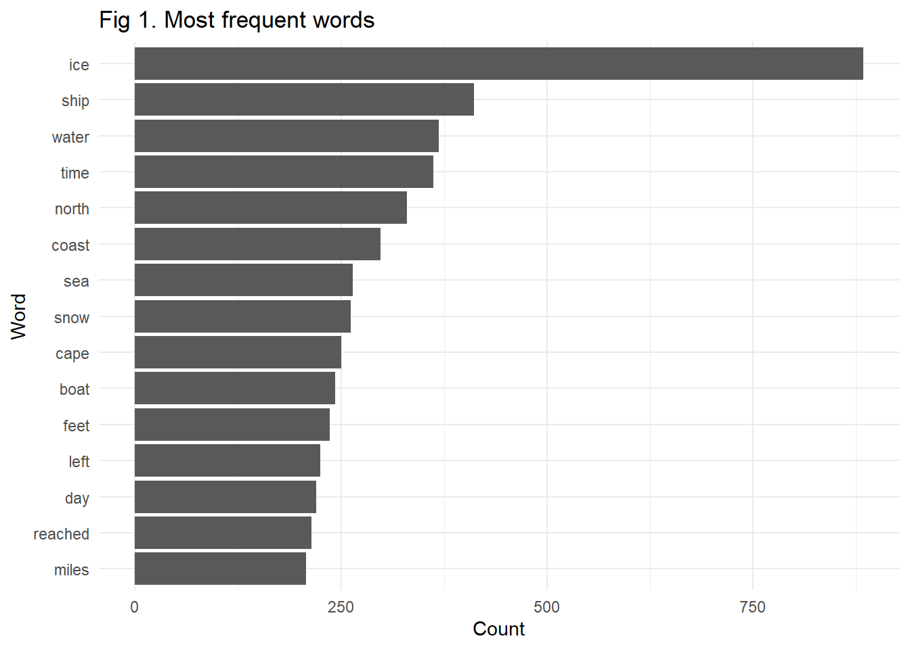
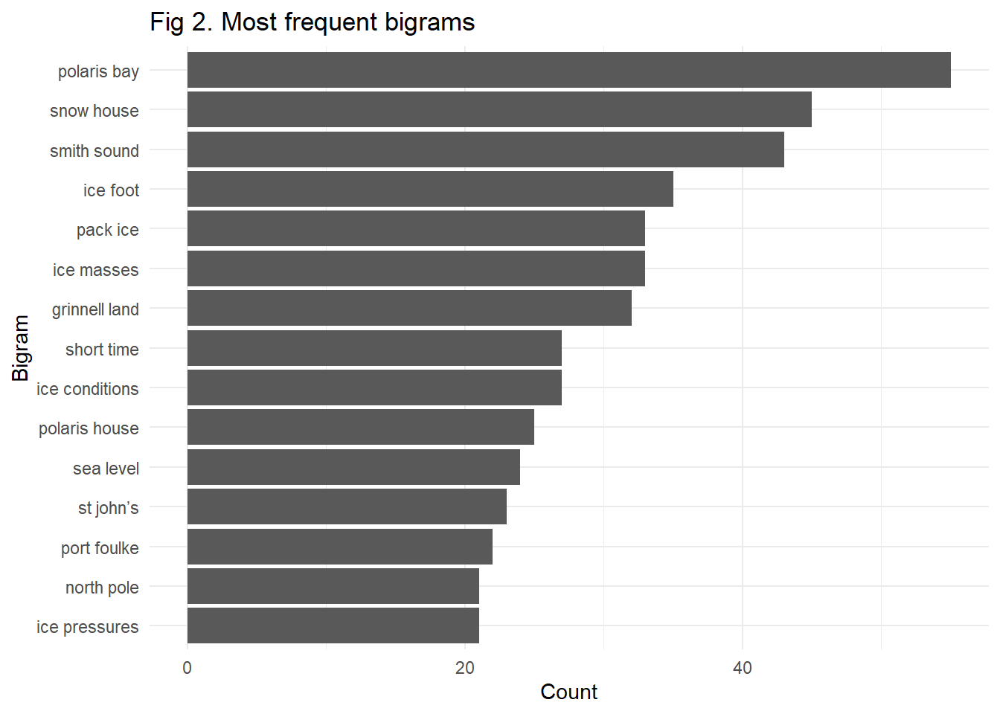
Dominic Bordelon
May 5, 2022
In popular (and even academic) imagination, historical narratives of exploration have tended to follow a “great man” pattern in which one person (invariably male) bears sole responsibility for a great historic achievement. This simplistic view of the history of science elides the many nuanced circumstances which converge to produce a specific historical moment. The Polaris expedition, 1871–73, was the U.S. Navy’s first attempt at reaching the North Pole. Its captain and founder, Charles Francis Hall, was a “great man” of his day. Although the expedition did fail in more than one sense—not least, Hall’s unsolved murder—it had some scientific interest, which has tended to be overshadowed by the “great man” tragedy. Furthermore, Eurocentric and white supremacist views have tended to suffuse popular exploration narratives, with the result of erasing the intellectual contributions of indigenous interlocutors. The episode of the Polaris expedition in multiple accounts serves as an entrypoint for considering how indigenous perspectives are suppressed in usual narratives of exploration.
Taqulittuq was an Inuk woman born around 1838 at Cape Searle (Nickerson 2002). Her older brother, Eenoolooapik, was befriended by an Englishman seeking geographic information for commercial advantage. Through this connection, she and her husband, Ipirvik, traveled to Britain, received society training, met Queen Victoria, and toured the country.
Charles Francis Hall, born in Cincinnati in 1821, worked as a newspaper editor and apprentice blacksmith (he had a “compact, vigorous frame”) before styling himself as an Arctic explorer (“Objects of the Expedition Description of the Polaris and List of the Crew.” 1873). He spent the 1860’s searching for signs of the lost Franklin expedition. During this time, he met Taqulittuq and Ipirvik, and they became fast friends—or perhaps, as Jones (2002) imagines, he “instantly concluded that this couple was just what he needed to teach him the language, customs, and survival arts in the Arctic” (p. 12).
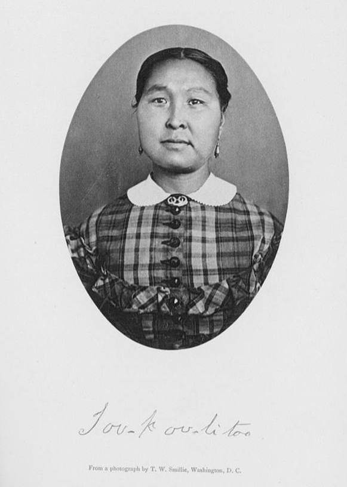
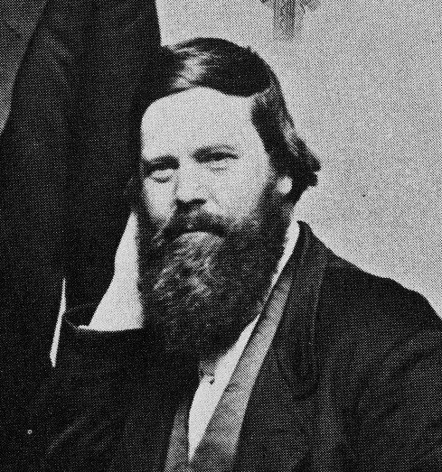
By the time Bessels (2016) met Taqulittuq in 1871, he described her this way:
She had mastered the secrets of writing and was on more comfortable terms with the spelling of the English language than many free citizens of the United States. She had not only assumed the modern fashions of the female world but has also acquired tolerably good manners and possessed that tact which is more or less peculiar to the feminine nature. . . . Mentally she was far superior to her spouse and spoke English quite fluently, whereas he could express himself only with difficulty. . . . (p. 23)
Ipirvik, meanwhile, is “a superb hunter and an enviable shot, but he liked the small pleasures of civilization and placed great value on fine clothes, alcoholic beverages and strong tobacco” (p. 23).
In the course of his Franklin expedition adventures, Hall’s “name and fame have been known throughout the civilized [sic] world” (“Objects of the Expedition Description of the Polaris and List of the Crew.” 1873). Following his success searching for the Franklin Expedition, Hall developed a new goal: to investigate the “open polar sea” as theorized by Kane, and to advance further to the North Pole. Should the pack ice prove too dense, dog-drawn sledges could be used along the shore to approach the Pole.
Hall used his celebrity to advocate for a mission to the open polar sea and ultimately the North Pole, and “[s]o zealous was Capt. Hall in advocating this idea and confident of what a discovery might be achieved, that Congress finally voted an appropriation of $50,000 to fit out an expedition for the object of giving a practical test to Capt. Hall’s theory, and thus aid the progress of science and civilization” (“Objects of the Expedition Description of the Polaris and List of the Crew.” 1873). The expedition’s chief scientist would be Dr. Emil Bessels, a graduate of the University of Heidelberg born in 1847 (Bessels 2016, 555). He was experienced with European polar science and museum curatorship already.
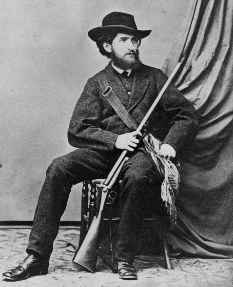
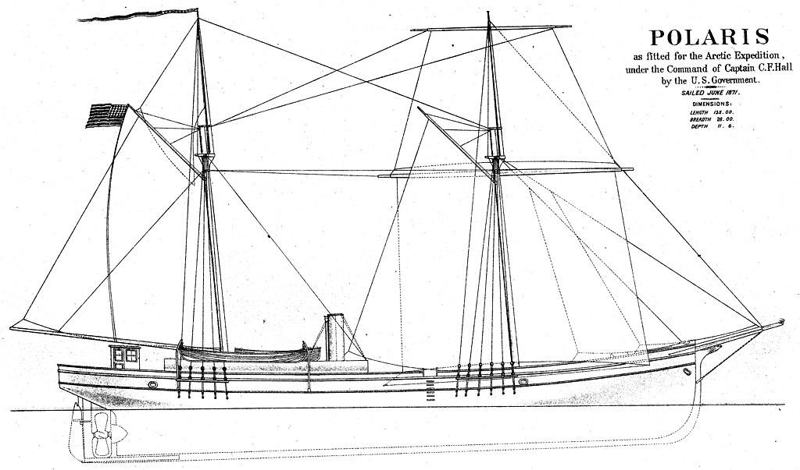
The Polaris was a 400-ton ship that was overhauled for Arctic exploration: structural timbers were strengthened; a solid oak “ice skin” covered the hull planking; iron armor plates were added to the bow; and the ship had a sharp prow for cutting ice. The ship was also outfitted well with spare parts, boats, scientific instruments, firearms with powder and ammunition, durable provisions, and even whaling equipment (“Objects of the Expedition Description of the Polaris and List of the Crew.” 1873; Bessels 2016, 15–16). These many material advantages helped ensure that the thirty-nine passengers, four of whom were children, survived the expedition. Of these thirty-nine, most were American or German with a background in seamanship, naval service, or science, though the four children as well as two couples—Taqulittuq and Ipirvik, and Hans Hendrik and Merkut Hendrik—were Inuit who joined through Taqulittuq’s personal connection to Hall. Although the expedition was nominally a naval one, Hall had no military training.
The Polaris set sail from New York on June 29, 1871. They reached Newfoundland in July, and Holsteinborg (now Sisimut), Greenland in August. Throughout this time, tensions escalated as Bessels and the science corps challenged Hall’s authority and the purpose of the mission.
It was expected that the ship would freeze in for the winter, hopefully around 80° N in latitude, and then take sledges northward on Ellesmere Island, which Hall believed stretched to the North Pole (“The Arctic Explorers: Arrival of the Polaris at the Brooklyn Navy-Yard” 1871). The northernmost point of the Polaris’ travel was reported as 81° 38’ N, 61° 44’ W (Nature 1873a), at the northern end of Nares Strait between Ellesmere Island (Canada) and Knud Rasmussen Land (Greenland), and just south of the Lincoln Sea (Natural Resources Canada 2017). After being rebuffed, the ship backtracked south slightly and anchored in Polaris Bay for the winter of 1871–2, just off the coast of northwestern Greenland.
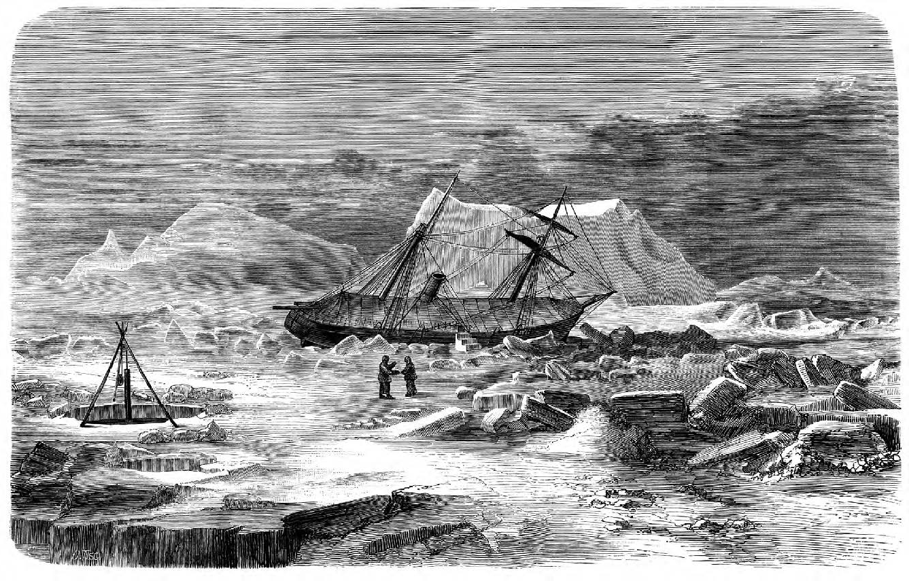
Hall attempted a sledge trip northward, but soon found the coast of the Lincoln Sea at Repulse Harbour. After the sledge group’s return, Hall suddenly and mysteriously took ill on October 4, eventually dying on November 8.1 Command fell to Sidney Ozias Budington, who was often inebriated and subsequently allowed discipline to disintegrate on the ship. The following June, a small group tried for the Pole in one of the ship’s whaleboats, but with no success. Budington ordered the group back in order to escape back southward. On August 12, they began their escape, but were frozen again within days.
Then on August 15, 1872, the frozen-in and drifting Polaris seemed to spring new leaks in response to shifting ice and wind. Budington ordered the winter provisions removed from the ship (Tyson 1873). Tyson was overseeing this activity and was on the ice when the ice enclosing the ship suddenly cracked, separating the ship from the provisions and 18 crew who were out on the ice. This occurred during the night, and the ice floe rapidly drifted away from the ship. The next morning, those trapped on the ice signaled to the Polaris some miles distant, but those aboard claimed not to have seen the signals. This separation occurred at around latitude 77° 20’ N (Petermann 1873).
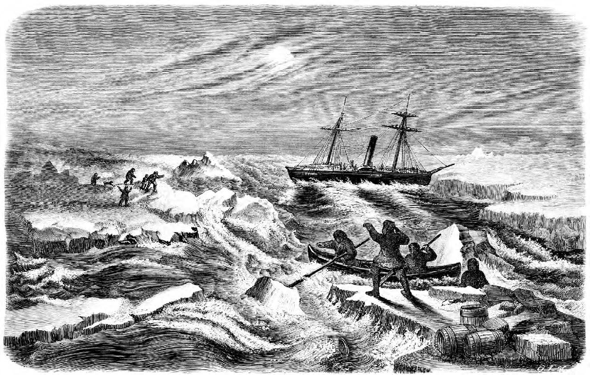
Survival on the ice floe was aided by the provisions. Tyson, as ranking officer, also became de facto leader. The group survived through the winter by making igloos on the floe. They ate birds in February, and some seals in March. However, on April 1, they were forced to abandon their provisions, and nearly starved over the next weeks for want of seals. On April 21, the group encountered and killed a polar bear, which they ate. They drifted further until finally being picked up around 53° 35’ N, 55° W by the Tigress, a ship dispatched to search for them, on April 30, 1873. This was a distance of over six hundred miles from the point of separation (Tyson 1873; Nature 1873a). One writer gave readers more familiar reference points: “The length of the course of this ice-floe drift is not less than 1,500 nautical miles, which equals the distance between Trieste and the North Cape, or Stockholm and Aleppo, or Peters burg and Malta, or Tilsit and Lisbon, or Reykjavik and Venice” (Petermann 1873).
Meanwhile, the Polaris limped for a while south and eastward, taking on water, until it ran aground near Etah on October 16, 1872, and the crew decided to dismantle the ship to use its wood for shelter. They constructed a small building, “by the help of a few friendly Esquimaux” (Nature 1873b), where they eked out a relatively comfortable winter, especially compared to the group on the floe. During this time, Bessels continued to make observations, though many of the instruments had been lost. The following June, the crew built boats from the Polaris wreckage and sailed south, before being rescued by a whaling vessel, the Ravenscraig, in July 1873.
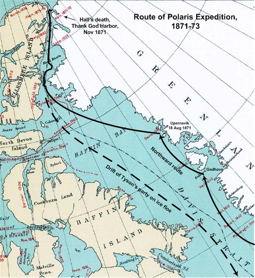
After the expedition, Bessels took a position at the Smithsonian Institution. He would participate in another expedition in 1875, near Vancouver, but it ended in disaster. Bessels published a first volume of Polaris expedition findings, “Physical Observations” (Bessels and United States. Navy Dept 1876), but never managed to publish a second volume before his home library burned down in 1885 (Bessels 2016). He died in 1888 while visiting his mother in Germany.
Taqulittuq had spent some time in Groton, CT prior to the expedition. She returned there in 1873, until her death in 1876 (Nickerson 2002).
Geographic explorations were probably the expedition findings which gained the most interest in both scientific and general audiences. The extents of the Nares Strait north of Smith Sound are described and mapped in detail in (Nature 1873a), the first publication of findings. This area was of great interest because it was believed to be the most promising route for a Northwest Passage. In his 1854 expedition, Kane reached a latitude of 78° 37’ N (Petermann 1873). Kane posited that this body was an enormous “open polar sea” stretching from latitude 78° N to the Pole. However, progress further northward enabled the Polaris to identify that this “open sea” narrowed back into a channel with several inlets branching on either side: “The open polar sea laid down by Kane and Hayes is found to be in reality a sound of considerable extent formed by the somewhat abrupt expansion of Kennedy’s Channel to the northward” (Nature 1873a, 219–20). These discoveries were apparently momentous at the time—for example, in their summary of findings, Nature (1874) highlight the navigability of Kennedy Channel second only after the record-breaking latitude that was reached—but in retrospect, this channel held relatively little consequence, as the pack ice2 poleward would ultimately make ship navigation impossible with technologies available at the time.
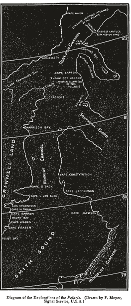
An additional geographic insight provided by the expedition was more understanding of the rate of flow in the channel and the general accumulation of pack ice. In comparison with the European Arctic, Petermann (1873) notes that similarly stranded explorers had to drift only a much shorter distance to get free. Given these conditions, he argues for other exploration routes besides Smith Sound.
Many tidal observations were made, particularly when the expedition was wintered in Polaris Bay. Notably, Bessels’ team identified that the tide of their harbor flowed from a Pacific rather than Atlantic source. Bessels estimated where the Atlantic and Pacific waves would come together, and upon visiting the area noted a lack of current, confirming his hypothesis. The presence of a current countervailing to the Atlantic meant that there must be open sea to the northwest of Nares Strait.
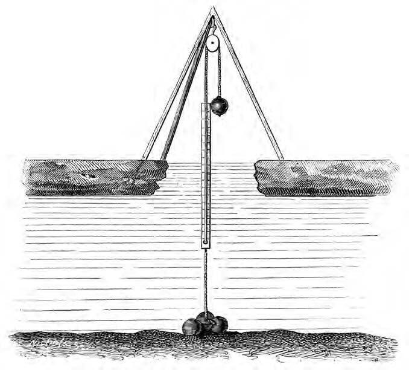
The insularity of Greenland was a vaster (though commercially uninteresting) geographic finding. When a group led by Hall made a sledge expedition north to what he would name Repulse Harbour,3 in the very northwest corner of Greenland, Meyer observed from an altitude of 1,700 feet that there was no land to the northeast (Nature 1873a). This put an end to some speculations that Greenland stretched northward to the Pole.
Bessels pursued a broad and ambitious program of study, summarized here:
Table 1. Summary of scientific findings by field of study4
| Field of study | Instrumentation | Findings/notes |
|---|---|---|
| Astronomy | Würdemann transit; Gambey sextants; box and pocket chronometers; pendulum | latitude and longitude of transit station; most records lost |
| Geology | rising of land deduced from fossils;5 south-to-north geologic drift in Greenland; Davis Strait once flowed in the opposite direction; most geologic samples lost | |
| Magnetism | unifilar declinometer; dip circle with Lloyd’s needles; theodolite; prismatic compasses | hourly readings + six-minute readings three days per month (synchronized with other stations), for five months |
| Meteorology | mercury thermometers; spirit instruments; mercury and aneroid barometers; Regnault’s apparatus; Robinson’s anemometer; Casella’s current-meter; rain gauge; black-bulb and in-vacuo thermometers | three-hourly observations while traveling, and one-hourly while wintered; lack of detectable electrical activity in the aurora borealis; most records saved |
| Ocean physics | tide gauge | limits of Gulf Stream west of Greenland; Protobathybius robesonii; few soundings; specimens of water lost |
| Zoology and botany | collections nearly completely lost;6 for observations see below |
As noted in Table 1, nearly all specimens collected—“natural history” (i.e., animal and plant), geologic, and seawater samples—were lost in the course of separation. Some scientific instruments were also lost at this time; the New York Times reported that resumed readings after rescue by the Ravenscraig “were not so exact as was to be desired, there being little convenience and very few instruments” (“The Scientific Results of the Expedition” 1873).
Bessels seems to have taken a similar care in his natural history collections and observations as with his geophysical work.
Table 2. Clades reported found by the Polaris expedition7
| Clade | No. of species found |
|---|---|
| Mammals | 8 |
| (Seals) | (4) |
| Birds | 23 |
| Insects8 | ~15 |
| Phanerogamic9 plants | 17 |
| Mosses | 3 |
| Lichens | 3 |
| Fresh-water algae | 5 |
Nature (1875) also report that one of the Diptera (fly) inspect species was new to science, and that Myodes spr. (lemmings) and Ovibos moschatus (musoxen) “were found in West Greenland for the first time.”
In his published account, Bessels (2016) does not provide a systematic reference to his observations, although one note offers a non-exhaustive list of species and notes on conditions, range, and behavior. The most commonly observed species, according to Bessels’ notes, follow:
Table 3. Commonly observed wildlife species10
| Scientific name used by Bessels (2016) | Current scientific name11 (where different) | Common name |
|---|---|---|
| Ursus maritimus L. | polar bear | |
| Canis lagopus L. | Alopex lagopus | arctic fox |
| Phoca groenlandica Müller | harp seal | |
| Phoca hispida Erxleben | Pusa hispida | ringed seal |
| Phoca barbata Müller | Erignathus barbatus | bearded seal |
| Lepus glacialis Leach | Lepus arcticus | arctic hare |
| Myodes torquatus Pallas | Dicrostonyx torquatus | lemming |
| Ovibos moschatus Zimmermann | muskox | |
| Lagopus spp. | ptarmigan | |
| Sterna macroura Naum. | Sterna paradisaea | arctic tern |
| Bernicla brenta Pall. | Branta bernicla | brent goose |
| Uria grylle L. | Cepphus grille | black guillemot |
As with other scientific observations in the text, Bessels’ biological sightings are sprinkled into the narrative where chronologically appropriate, sometimes digressing into a longer description of the animal’s habits or relating the sighting of interest to other sightings of the same species that were made during the expedition. While the narrative proceeds chronologically, some chapters also have a thematic topic, such as Chapter 27, “Whaling.” Upon being rescued by some whalers, Bessels describes in detail their ship, and the process and tools of whale-hunting and butchering.
A quantitative analysis of frequently used words (Fig. 1) and bigrams, or two-word phrases (Fig. 2), conveys a sense of the practical and physical quality of Bessels’ account, though it is not devoid of human drama. Frequent bigrams show greater specificity: Polaris Bay, Smith Sound, and Grinnell Land are the vicinity where the Polaris was anchored and ice-locked for the winter of 1871–72; “snow house”12 was Bessels’ usual term for igloo; St. John’s, Newfoundland was a major settlement and stopover, and served as the site from which the rescue search was launched; and of course natural features such as “ice foot,”13 “pack ice,” and “ice masses.”
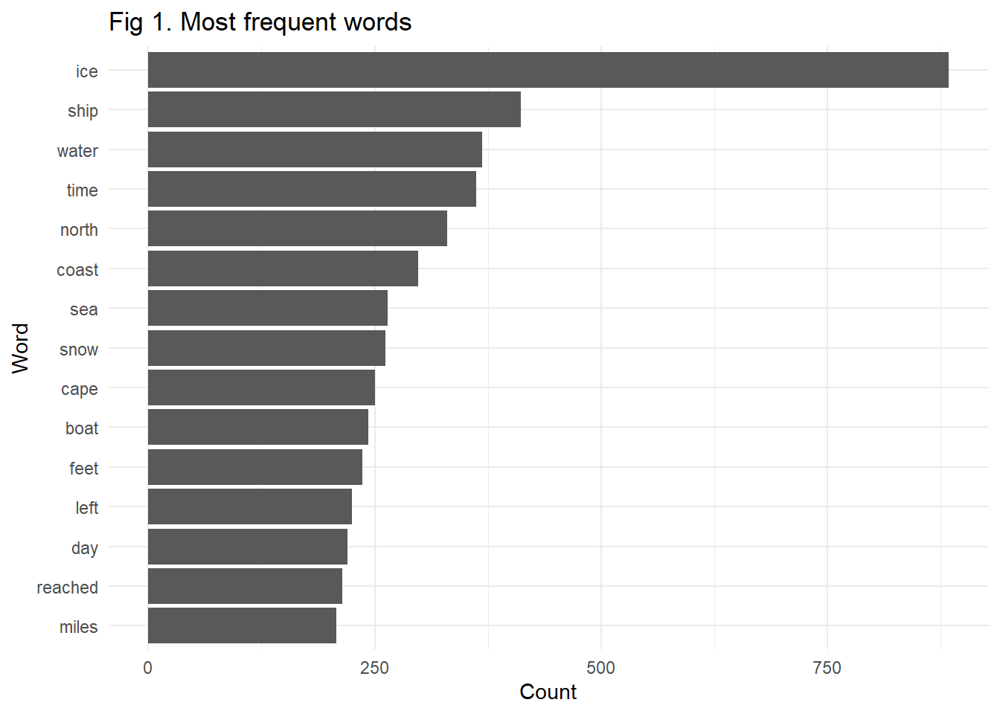
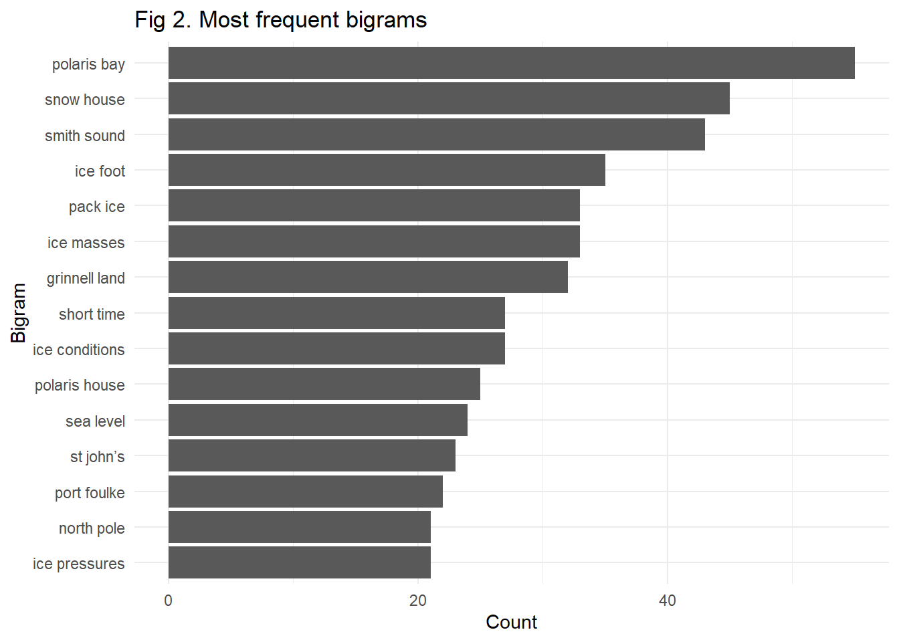
Examination of the most frequent words for wildlife terms shows that there are many references in the text (Fig 3). For Inuit as well as the expedition, seals were not only commonly observed, but also an important source of food, clothing material, blubber for burning in lamps, and even hydration (via their blood) during desperate times.
The wildlife bigrams are notable for their rarity: the most frequent, “black guillemots,” appears only 11 times in the text. The dearth of scientific names in this volume—they are limited to footnotes—suggests that Bessels may have intended this work for a popular rather than purely scientific audience. Despite the many mentions of seals in the text, and the presence of three seal species, Bessels identifies only the bearded seal (Phoca barbata Müller, now Erignathus barbatus) specifically, and only seven times.
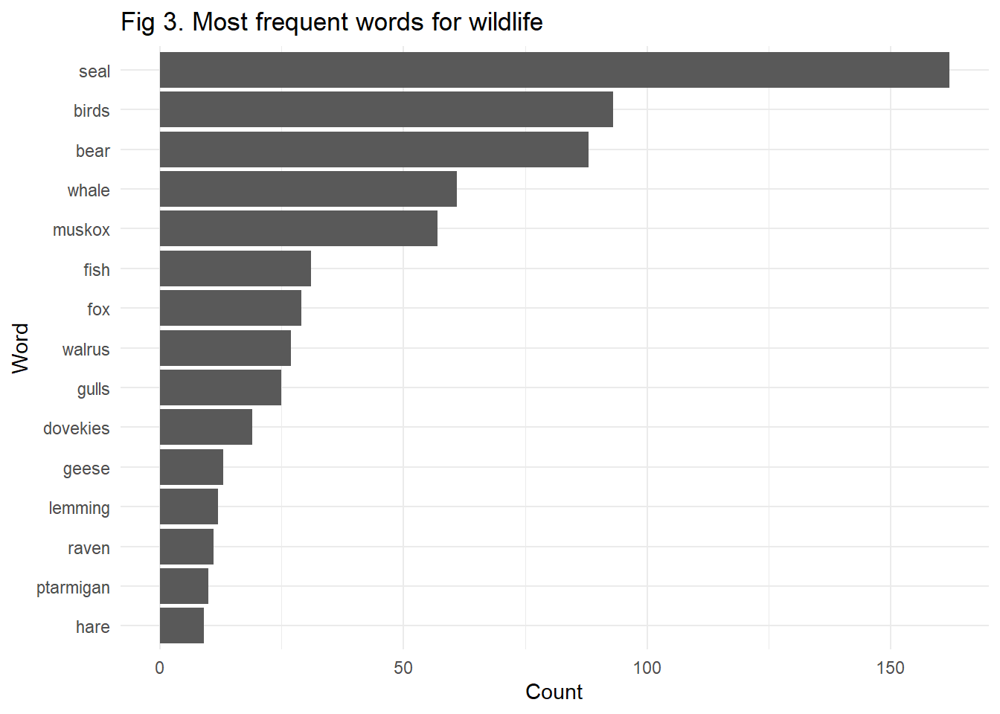
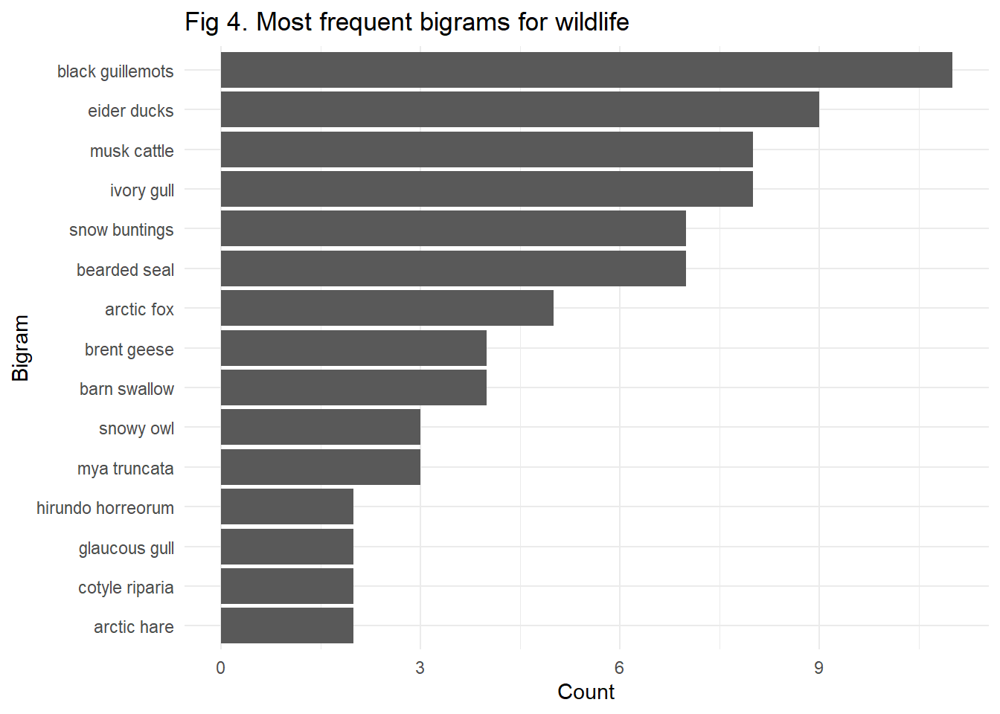
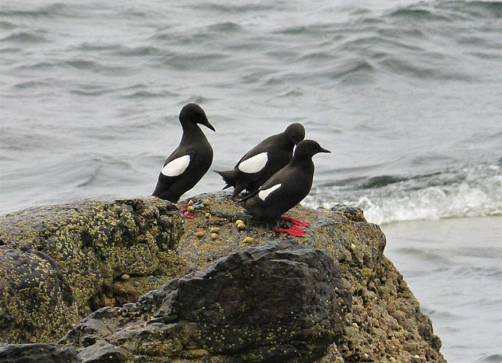
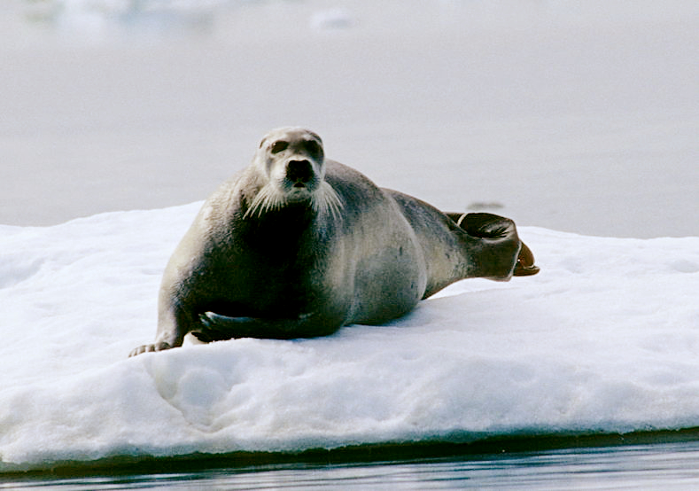
With flora, on the other hand, Bessels seems more inclined to use scientific names, although most species are mentioned only once, except for purple saxifrage (Saxifraga oppositifolia) and Arctic willow (Salix arctica), which are usually mentioned using their common names. Bessels notes the rapid life cycle and stunted morphology of Arctic plants, paying particular attention to the shallowness of root systems due to permafrost (Bessels 2016, 323). “Poppies” are the Arctic poppy (Papaver radicatum). Draba is a genus that Bessels may have considered a grass.
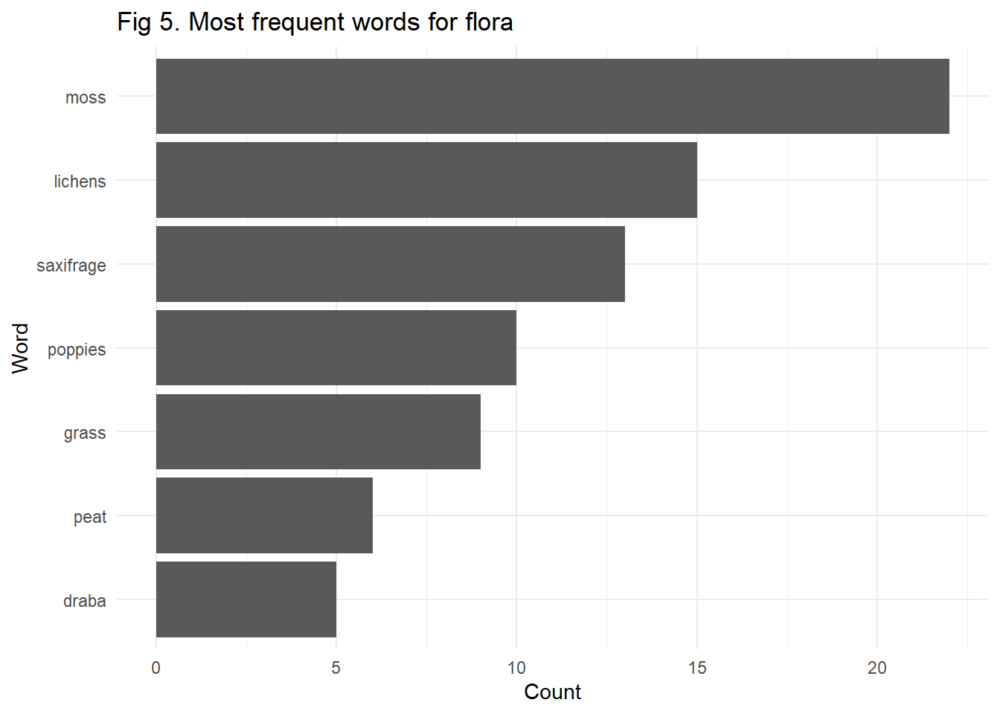
An interesting counterfactual to consider is what impact Bessels’ natural history collections might have had if they’d survived. Nevertheless, given the specificity of Bessels’ writing, one can imagine how useful the observational data might have been to, for example, ornithologists who had only observed the same species at lower latitudes and a different time of year. Determining an effect like this would require more investigation.
Inuit guides were evidently valuable expedition members: they had survival skills and knowledge of the local environment. Several occurrences in Bessels (2016) show that Inuit interlocutors contributed greatly to his understanding, and that he was cognizant of this. For example, during a muskox hunt, a storm descends, and the party waits it out in shelter. To pass time, Ipirvik tells stories and information to Bessels, which are in turn related to us:
If I have spent rather long on the muskox and its lifestyle, this happened only because I was able to derive the bulk of my material from a man whose major occupation was hunting. Accustomed from childhood to sharpening his gift of observation in this direction, he noticed small details that usually escape the eye of the dull-sensed civilized man, and had had experiences that could only happen to an Eskimo. I record here with pleasure the fact that I owe him sincere thanks for the multifarious lessons that he was always prepared to teach me, both during the long winter night on board ship and on the trips which we made together for various purposes. It would indeed be unjust if I were not to admit that the cursory remarks that from time to time I am able to offer on the lives of animals and Eskimos, insofar as they represent anything new, are largely his contribution. I believe I can vouch for the truth of his statements. (Bessels 2016, 195)
Examples of tidbits of information that Ipirvik supplies to Bessels abound:
Bessels grants attribution to Ipirvik in these many cases.
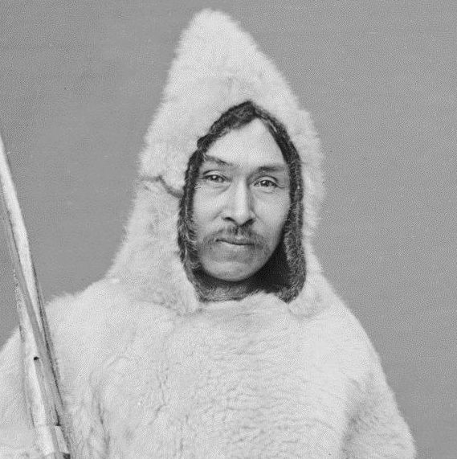
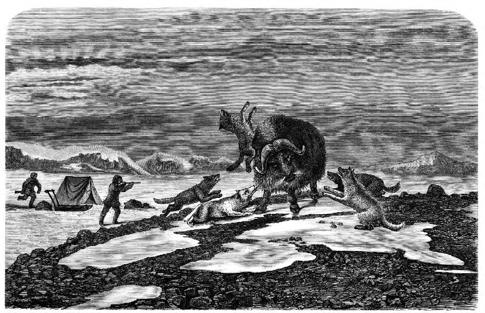
Bessels (2016) also praises the cartographic abilities of Hans and Ipirvik: “Both. . . possessed the estimable talent of committing such rough drawings to paper with a surprising degree of facility. These situation maps, executed from life, were always sufficiently accurate for practical purposes” (p. 328-9).
Besides providing information, Taqulittuq and Ipirvik play crucial roles in the survival of their expedition mates. Their skills, such as hunting, sledge-driving, igloo-building, and way-finding are deployed frequently, but they are rarely commented upon. One exception is during a foray from the ship:
A few miles from the snow house we met Joseph. This faithful soul, concerned that an accident had happened to us, had followed our trail and brought us a bag of hardtack and pemmican. We had been on the move for 23 hours, and we had eaten nothing during that time. Since we thought we were so close to the cape that we were pursuing, we had hoped to be able to get back in a few hours and hence had not thought it worth the trouble to load ourselves up with food.
The miserable snow house now seemed like a stateroom to us. During our absence Joseph had fitted a window in the roof, through which subdued daylight penetrated. A pot of bear soup was simmering over the flickering flames of the blubber lamp, and we were given water to quench our burning thirst. (Bessels 2016, 290)
We see here not only a warm appreciation for Ipirvik’s gesture, but even a sense of caretaking in the comfort of the igloo.
Ipirvik’s seal-hunting method is described by Bessels (2016):
From now on one had to lie in wait for the seals at their breathing holes, a hunting technique that demands a lot of practice and great endurance, and that can only be practised by people who are completely tempered against the hardships of an arctic winter. The hunter must wait for hours, almost motionless at the small hole in the ice, his face turned into the biting wind, so as not to alarm the surfacing seal; for the slightest careless movement is enough to scare away the sharp-eared animal. (p. 433)
Later, after the separation, Ipirvik’s abilities with this type of hunting undoubtedly kept those stranded on the ice floe alive: assuming that a hunter could successfully shoot a seal, those on the floe would have had no way to retrieve their quarry. In this situation, only this method of hunting worked, and only seal meat kept the group alive.
Indigenous food practice also staved off scurvy, though this was not understood at the time. As Bessels (2016) notes, “The natives ate large pieces of tender meat raw; Chester and I followed their example” (p. 188). European and Euro-American explorers would have been most likely to cook their meat, but doing so would have destroyed the antiscorbutic compounds found in seal muscle (Guly 2013).
Finally, it can be said that Bessels views Taqulittuq and Ipirvik with basic human empathy. After Hall’s death, upon hearing the coffin-nails, “With every stroke Hannah [i.e., Taqulittuq] let out a violent sobbing. She, her husband and the little girl, Pannick, had lost their best friend; the dead man had been more than a father to them” (p. 217). Although Bessels clashed with Hall, he is still able to appreciate the pathos of Taqulittuq’s loss.
In contrast, in the several Nature publications, Inuit are invisible, with the exception of the “kind Eskimaux” who help build Polaris House. Exploring Bessels (2016)’ text through the lens of indigenous knowledge contribution casts a new light on the stark absence of indigenous contribution in these pieces.
The differences we see among these accounts create intriguing questions: Bessels (2016) shows us a wealth of knowledge which Ipirvik shares with the author, yet by the time these findings are condensed and edited for the pages of Nature or the New York Times, that presence is erased. Martin (2020) notes the recent activity of “tracing indigenous intermediaries”: “the assistance that these people provided was rarely recognized upon the Western traveller’s return from the field. . . . It has therefore become apparent that even in those rare instances where acknowledgement was given to the assistance received from indigenous intermediaries, their contributions would in most cases be reduced to simple physical labour or logistical practicalities” (p. 25). Martin explores the rhetorical positions taken when presenting indigenous knowledge as a way of tracing these intermediaries.
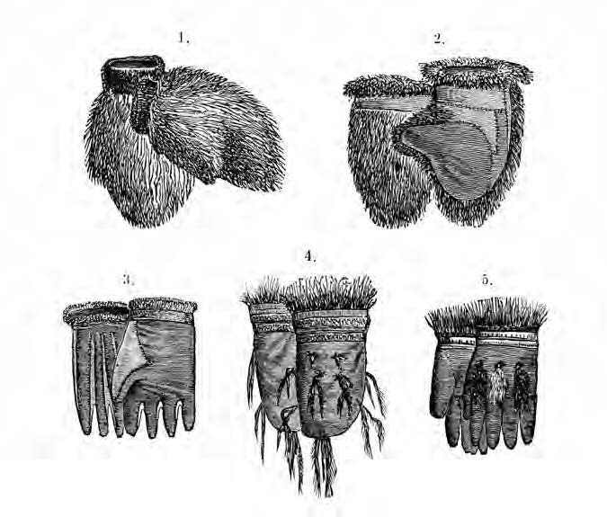
We can also trace Taqulittuq and Ipirvik: we see how little he appeared in superficial reports, yet also how much he taught to Bessels. Taqulittuq’s sewing apparently merited a mention in the New York Times: “It has been long ago demonstrated that the woolen clothing of the white man is absolutely wortheless to protect the Arctic traveler from the cold piercing blasts to which he is exposed. . . . The Esquimaux tailoress is, therefore, an important and really indispensable personage aboard the Polaris” “The North-West Passage: The Arctic Expedition of Capt. Hall to Sail in May” (1871). If that is the case, the work must have been truly excellent.
Though foul play was suspected at the time, the inquiry was inconclusive, and Hall’s body was unavailable. Bessels, a suspect given his clashes with Hall, gave testimony in during the inquiry which seemed to exonerate him (“The Polaris: Exoneration of Dr. Bessels” 1873) , but he is still suspected today. Hall’s biographer, Charles Loomis, exhumed the grave at Thank-God Harbour in the 20th century and found that Hall’s corpse had high levels of arsenic.↩︎
pack ice: “An expanse of sea ice formed from pieces of ice driven together into a mass that covers all or most of the sea surface, as found in polar seas,” first attested in 1791 proceedings, Transactions of the Society [of Arts] instituted at London for the encouragement of arts, manufactures and commerce. Eminent Arctic explorers William Scoresby and William Edward Parry used “pack ice” in their own writings in 1811 and 1824 respectively. (“Pack, n.10a,” n.d.)↩︎
Bessels (2016) estimated the latitude of Repulse Harbour as 82° 29’ N in a note, averaged from three differing estimates (p. 580). Government of Greenland (2022) places Repulse Harbour (Repulse Havn in Danish) precisely at 82° 6’ 3.5994” N, 59° 15’ 54” W, so Bessels overestimated here.↩︎
This table is based on Nature (1874); also includes information from Nature (1875).↩︎
Fossils of driftwood and molluscs were found at elevations of 1,800 feet; Bessels’ deduction shows that he held uniformitarian views (Nature 1875). Interestingly, in the same passage, Bessels (paraphrased by editors) claims also to have found marine crustaceans living in Greenlandic fresh water bodies, as further evidence of gradual elevation. It is unclear whether this was truly the case or Bessels misunderstood either the organisms or the aquatic environment.↩︎
“With the exception of two small cases containing animals, minerals, and one package of plants, nothing could be rescued” (Nature 1874).↩︎
@natureScientificResultsPolaris1874, p. 405, with the following corrections per Nature (1875): 8 mammal species rather than 9; 23 bird species rather than 21.↩︎
“one beetle, four butterflies, six diptera, one bumble-bee, and several ichneumons, parasites in caterpillars” (Nature 1874)↩︎
belonging to Phanerogamia, seed-bearing, now called Spermatophyta or spermatophytes (Oxford English Dictionary, n.d.).↩︎
These are given in the endnotes by the translator and editor, William Barr.↩︎
“A belt or ledge of ice attached to and extending along the shore in polar regions. Also: a protruding ledge (typically submerged) on the margin of an ice floe, etc.” first attested in English in 1856, probably as a loan translation from Danish (“Ice Foot, n.” (n.d.)). In German, Bessels used the term Eisfuss [sic] or “ice-foot” (Bessels (1879), e.g., p. 195; p. 211 in Bessels (2016)).↩︎